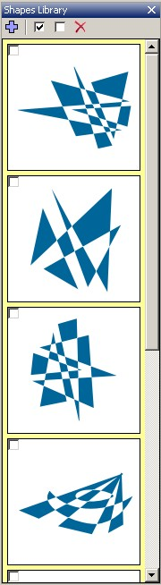

Shapes Library
|
 |
Shapes Library (SL) is a built-in shapes storage where you can store shapes you design to be retrieved later. By default, SL is located at the far-right end of ASSDraw3 GUI but it can be moved and docked to another position, and even hidden by clicking the X button. A menu item 'Shapes Library' under the menu 'Workspace' can be used to hide/unhide SL. You can add a shape you just draw on the canvas to SL by clicking the plus '+' button. A thumbnail of the shape will be added to the display area. Once it's there, your shape is considered saved in the library. You can replace a saved shape in the library with another shape currently on the canvas by right-clicking on the thumbnail and select 'Save canvas here'. To load a saved shape onto the canvas, simply double-click on the thumbnail. Selecting 'Load to canvas' from the right-click menu does the same. To remove a saved shape from SL, select 'Delete from canvas' from the right-click menu. You can also use the checkboxes to select multiple saved shapes and click the red X button to delete multiple shapes. Beware though that any deletion of shapes from SL is not undoable. |
This help file has been generated by the freeware version of HelpNDoc